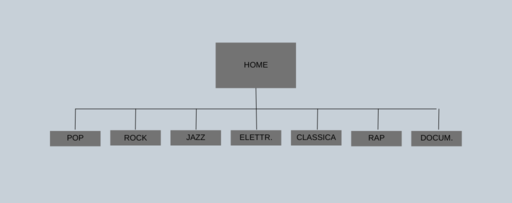
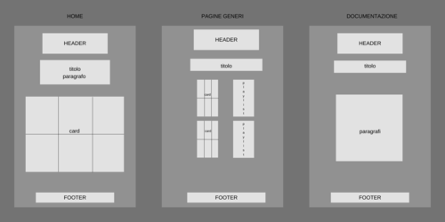

DOCUMENTAZIONE
ABSTRACT
Il sito permette di ascoltare, per ogni genere musicale e per ogni periodo scelto, una playlist in cui compaiono lo stesso numero di artisti donne e uomini.
L'industria musicale è ancora dominata dagli uomini e questa disparità si riflette all'interno della maggior parte delle playlist fornite dalle piattaforme streaming.
Il sito è stato pensato per dare visibilità alle artiste che, a confronto dei corrispettivi colleghi uomini, non hanno avuto lo stesso grado di visibilità e, di conseguenza, sono
nettamente meno conosciute, soprattutto dalle nuove generazioni al quale il sito principalmente si rivolge.
PROJECT MANAGEMENT PLAN
OBIETTIVI:
L'obiettivo del sito è quello di mettere in risalto le cantanti donne e confrontare il loro grado di successo
con quello dei colleghi uomini all'interno dei vari generi musicali e dei diversi periodi.
TARGET:
Giovani
COMPETITORS:
Spotify - non dispone di playlist che uniscano i principali artisti uomini e donne per genere e anno.
Billboard - offre classifiche e dati di vendita per vari generi musicali, consentendo di confrontare il successo degli artisti
sia uomini che donne ma non permette di ascoltare le loro canzoni.
Music Charts Archive - permette di ascoltare classifiche musicali di singoli e album divisi per decenni ma non li suddivide per genere
e non mette in risalto la differenza tra artisti donne e uomini.
STRUTTURA E LAYOUT
architettura del sito:
wireframe:
 Ho utilizzato uno stile minimal ed elegante. Il nero di sfondo vuole mettere in risalto le card e le playlist. Non ho inserito molto testo,
in modo che l'utente possa, dopo una breve contestualizzazione, andare dritto al punto.
Ho inoltre scelto di rendere tutto il più visivo possibile per permettere all'utente di farsi un'idea chiara in un colpo d'occhio,
per evitare di farlo stancare o di perdere la sua attenzione.
LINGUAGGI WEB USATI
HTML, CSS
STRUMENTI USATI:
bootstrap per le card, github per la pubblicazione, wikipedia per le immagini, Google, Pixabay, Pexels, Unsplash per le immagini creative commons,
I love img per ridimensionare le immagini, Google Font per le font, Bing Image Creator per creare le immagini nella home,
Font Aweson per l'icona, Favicon.cc per la creazione dell'icona.
COMMUNICATION STRATEGY
Sul web si possono facilmente reperire informazioni riguardanti il tema da me analizzato. Alcuni siti offrono dati statistici sulla differenza di presenza
tra donne e uomini nell'industria musicale, altri classifiche divise per anni, altri elencano gli artisti di maggiore successo per ogni genere.
Il mio sito web ha come
obiettivo quello di unificare tutti questi aspetti, permettendo di ascoltare anche le canzoni.
Nonostante non sia molto approfondito, offre una panoramica su diversi aspetti: gli artisti più importanti uomini e donne per ogni genere musicale in ogni decennio,
dati riguardanti il successo di ogni artista e una classifica (ovvero l'ordine delle card degli artisti) che mostra la disparità tra vendite di uomini e donne.
Questo sito ha come obiettivo quello di informare e sensibilizzare.
Il sito si rivolge ai giovani under 30, ovvero quelli che hanno meno confidenza con la musica del passato.
Ho cercato di raggiungerli tramite Instagram, social più usato da questo target di persone.
Il mio target secondario sono invece tutte le persone interessate al tema del femminismo,
che ho tentato di raggiungere sempre su instagram, cercando pagine più specifiche.
Voglio che le persone che visitano questo sito riflettano su un aspetto della musica che magari non hanno mai considerato, ovvero il gender gap
presente nell'industria musicale.
Visitando il sito le persone potranno facilmente vedere la disparità che intercorre tra artisti uomini e artiste donne, vedendo anche come questa disparità
stia cambiando nel corso degli anni e come sia differente nei diversi generi musicali.
Per promuovere questo sito ho creato una pagina Instragram apposita.
Posso quindi misurare il successo del progetto tramite i follower e i like sulla pagina instagram e
utilizzando Google Analytics per misurare le visualizzazioni.
Il mio obiettivo è quello di raggiungere almeno 20 follower sulla pagina Instagram e 20 visualizzazioni al sito web